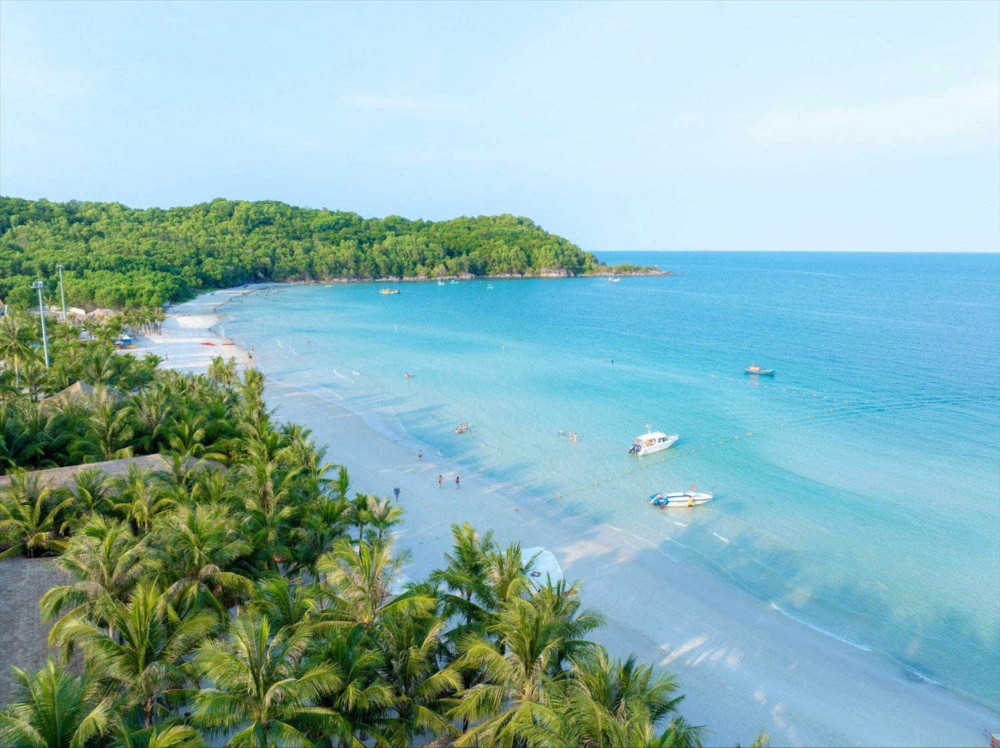
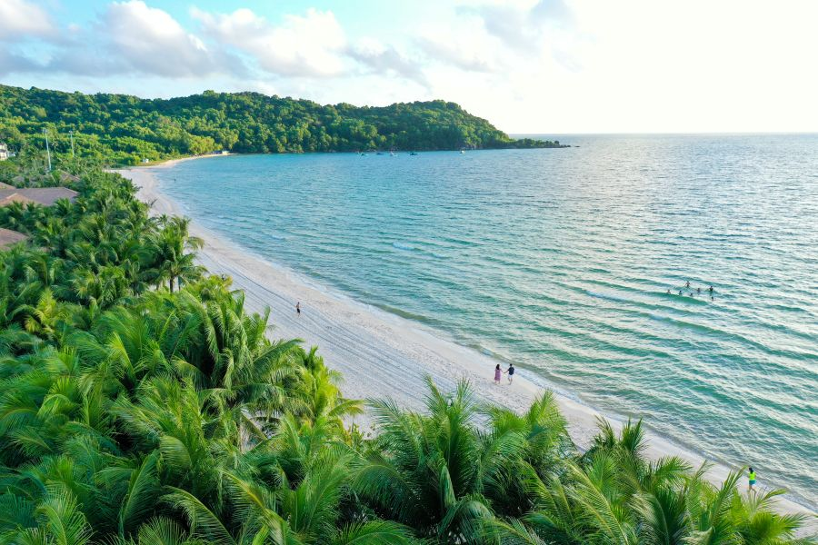
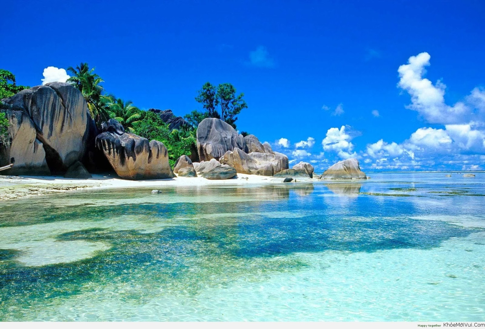

Phú Quốc - Đảo Ngọc Thiên Đường
"Bạn biết không, Phú Quốc được mệnh danh là Đảo Ngọc lớn nhất Việt Nam, nơi sở hữu những bãi biển cát trắng mịn màng ôm trọn làn nước trong vắt màu ngọc bích. Không chỉ có thiên nhiên nghỉ dưỡng tuyệt sắc, đây còn là thiên đường hoàng hôn rực rỡ và những trải nghiệm khám phá biển đảo đáng nhớ nhất."



Điểm nổi bật của Tour
- Khám phá quần đảo phía Nam: Trải nghiệm cano tham quan các hòn đảo hoang sơ, lặn ngắm san hô tuyệt đẹp tại Hòn Mây Rút, Hòn Móng Tay.
- Trải nghiệm giải trí hiện đại: Check-in tại Cầu Hôn (Kiss Bridge), khám phá thị trấn hoàng hôn Địa Trung Hải và trải nghiệm tuyến cáp treo vượt biển dài nhất thế giới.
- Thưởng thức ẩm thực biển đảo: Thưởng thức các món đặc sản trứ danh như gỏi cá trích, hải sản tươi sống tại chợ đêm và các nhà hàng ven biển.
Lịch trình tóm tắt (3 Ngày 2 Đêm)
- Ngày 1: Đón khách tại sân bay Phú Quốc - Check-in Thị trấn Hoàng Hôn - Ngắm hoàng hôn tại Cầu Hôn.
- Ngày 2: Khám phá các đảo bằng cano - Lặn ngắm san hô - Tham quan VinWonders hoặc Safari (tùy chọn).
- Ngày 3: Mua sắm đặc sản (Hồ tiêu, nước mắm, ngọc trai) - Tiễn đoàn ra sân bay, kết thúc hành trình.